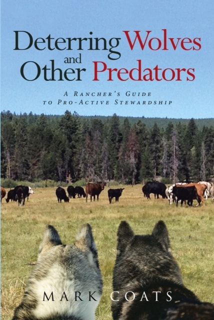
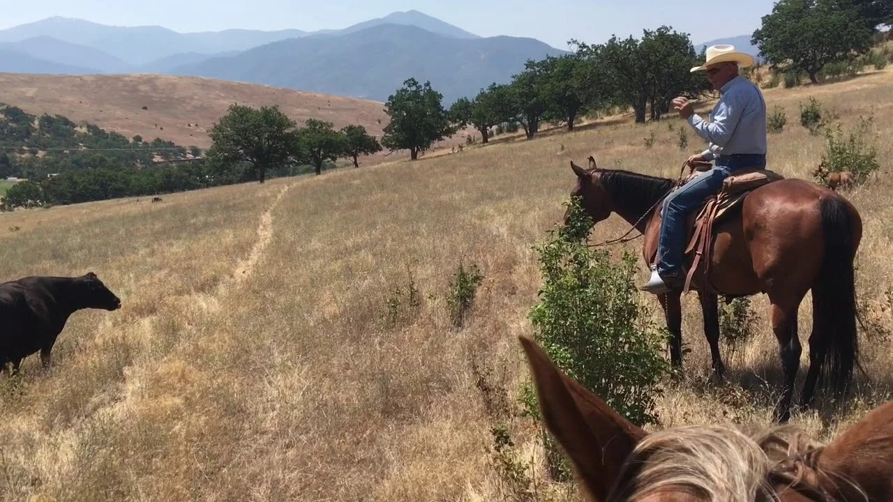
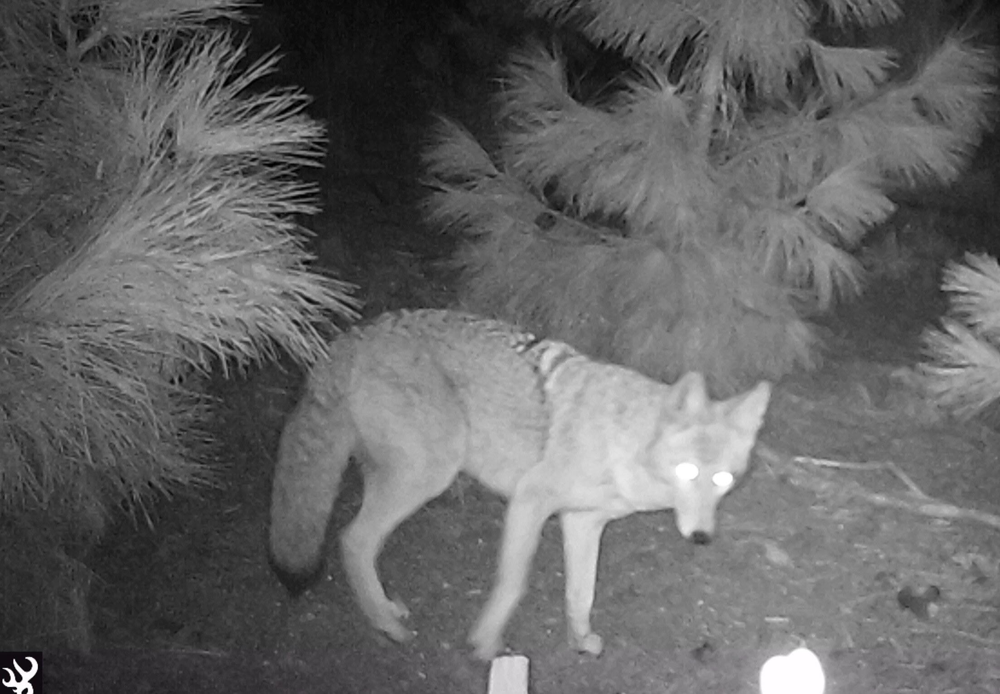
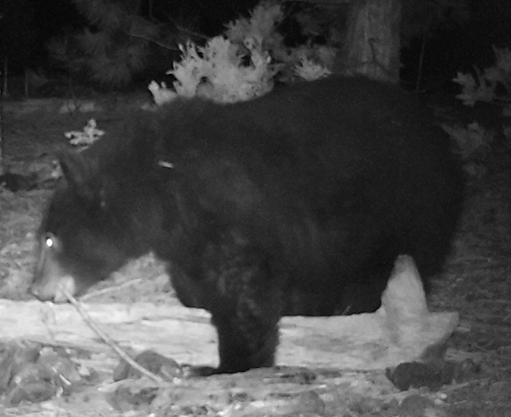
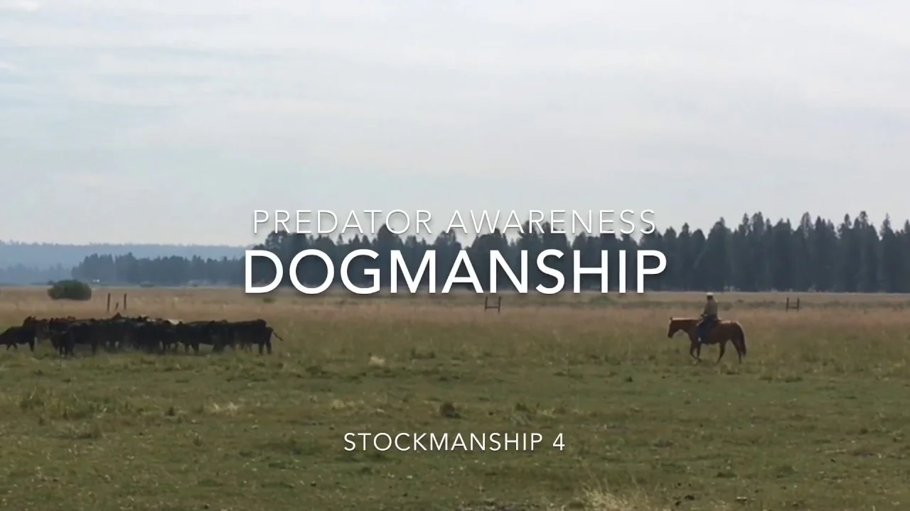
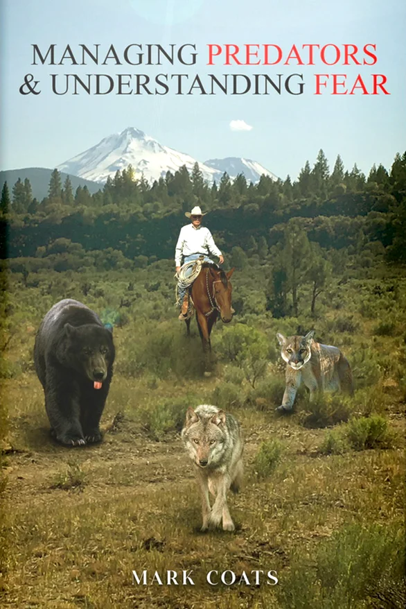
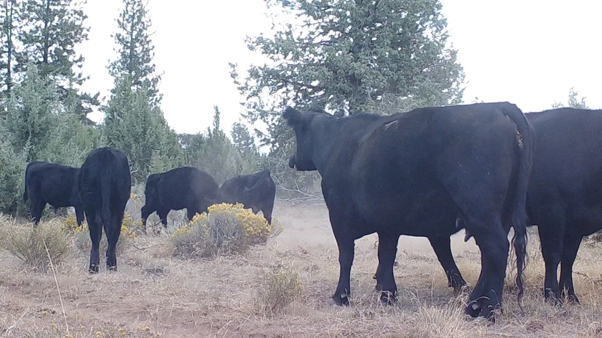
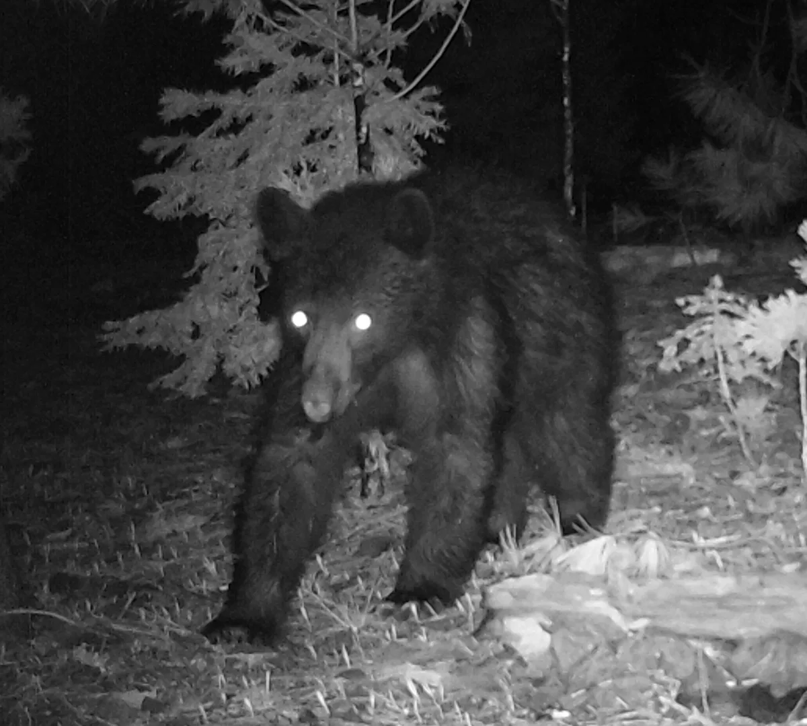

The group changes the encounter.
Mark places the herd’s defensive posture at the center of his approach to interrupting isolation and pursuit.
MARK COATS / RANCHER & AUTHOR
“Our focus is on our stock.”
Mark Coats · Deterring Wolves and Other Predators
A practical approach to cattle handling and herd behavior.
Explore the work. Decide what fits your operation.

THE BOOK BEHIND THE WORKDeterring Wolves
See the setting and handling behind Mark’s approach.
Watch the stockmanship lesson
Monitoring is another part of Mark’s approach to the range.

Mark’s written observations also discuss bears, lions, and coyotes.
Published training and camera images from Predator Awareness.
THE STANDING SOLUTION / HERD BEHAVIOR
A grouped herd. Heads outward.
A response other than running.
In Mark’s approach, cattle are encouraged to seek the herd when pressured, rather than separate and flee. The work begins with the relationship between the rancher and the stock.
Read Mark’s Guiding Behavior article PDFMARK COATS / THE RANCHER’S GUIDE
STOCKMANSHIP · BEHAVIOR · STEWARDSHIPDETERRENCE IN EVERYDAY PRACTICE
A Rancher’s Guide to Pro-Active Stewardship
Mark’s book brings his thinking about cattle, predator behavior, and proactive handling into one place.
Mark places the herd’s defensive posture at the center of his approach to interrupting isolation and pursuit.
He describes cattle grazing near one another so the group is close at hand when pressure appears.
His discussion extends to unfamiliar scent as a way of discouraging predator presence.
WORKING LESSONS / STOCKMANSHIP & DOGMANSHIP
Watch the handling, gathering, and gate work. Then explore the role of dogs in Mark’s training approach.

Overview, stockmanship, training, monitoring, dogmanship, and puppy development.
Explore all 12 video lessonsMARK’S FIELD ARTICLES
Articles by Mark Coats, organized for a closer look at cattle handling, dogs, and monitoring.
The complete written collection, from cattle responses and fear to scenting and monitoring.
Browse all 23 articlesMARK COATS / THE ORIGIN OF PREDATOR AWARENESS
A working perspective, shared through books, lessons, and observations.
Mark describes more than fifty years working on ranches, game refuges, and BLM and USFS permits. In his account, Predator Awareness began after the wolf OR7 crossed his ranch and entered California in 2011.
That experience is the starting point for the material gathered here: cattle behavior, handling, dogs, monitoring, and the use of scent.

ALSO BY MARK COATS
Continue exploring Mark’s work with his other published book.
View the companion book on AmazonCATTLE & WILDLIFE / THE CAMERA COLLECTIONS
Two collections from Mark’s original site: cattle movement and the wildlife passing through.

36 CATTLE PHOTOGRAPHS
139 WILDLIFE PHOTOGRAPHSMark identifies the canids in his wildlife collection as coyotes, not wolves.